open-dictate media
Every image is the real app's own windows (the pill, the history picker, Settings and Getting started), rendered off-screen from fixtures at 2x, on a synthetic desktop. Nothing is a mock-up, and nothing comes from a real desktop, clipboard or account. They are regenerated with qa/media/ (see qa/media/build.mjs).
Demo: one dictation
The live words, the waveform and the timings are the real recognizer and cleanup run on fixtures/two-sentences.wav, replayed into the real pill in real time (qa/media/demo-timeline.json). "sherpa-onnx" was added to Vocabulary first, as a person would; without it the cleanup guesses that name wrong. Cleanup ran Gemma then Emberon (0.86 s, on a Radeon 8060S with Vulkan).
Hero
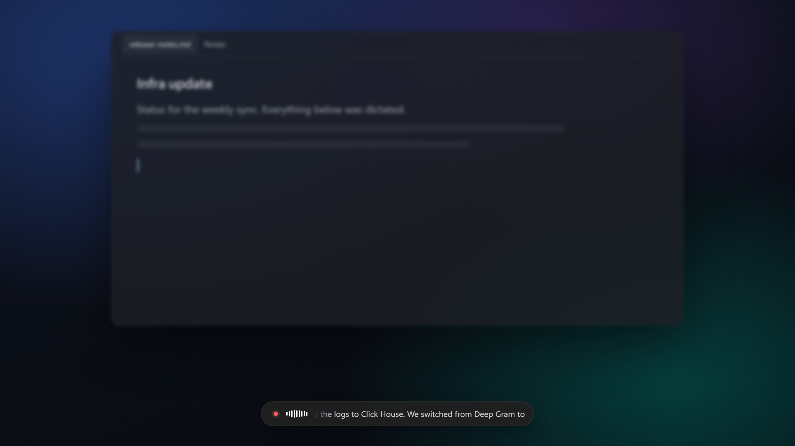
The pill's states
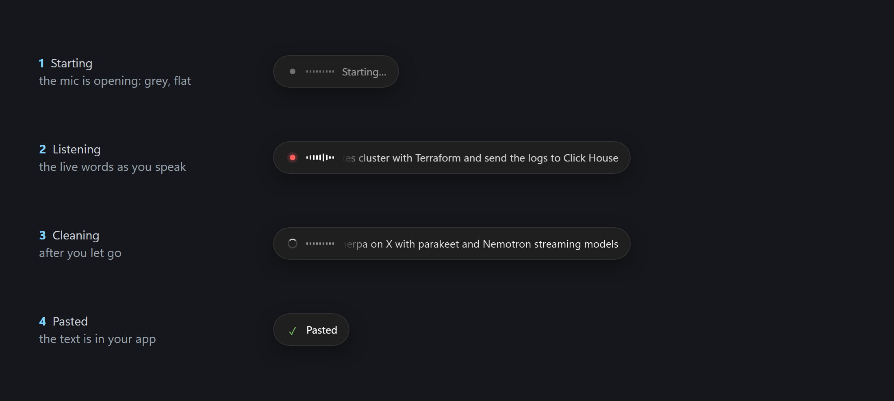
History picker
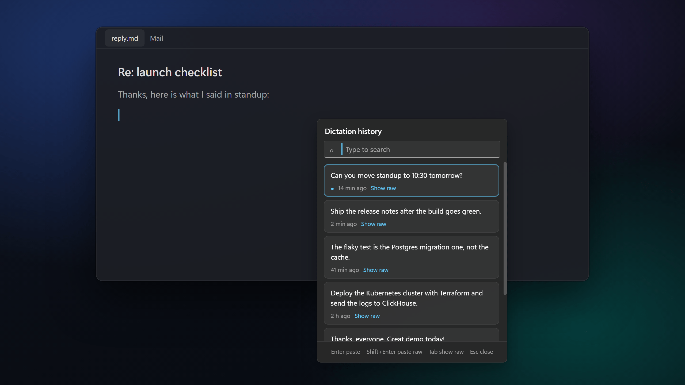
Getting started
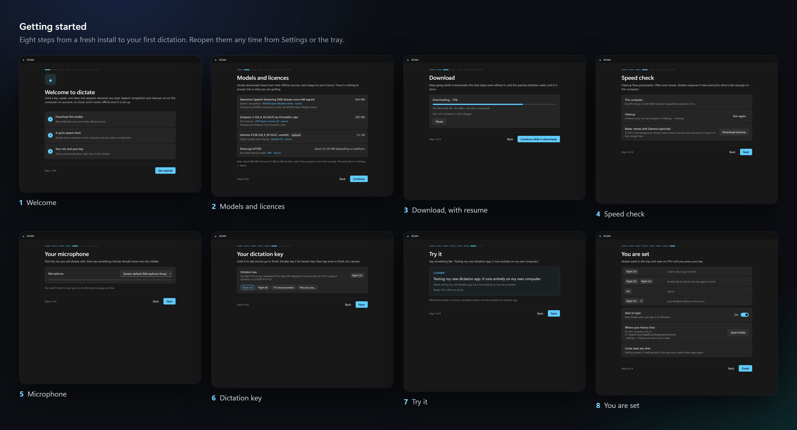
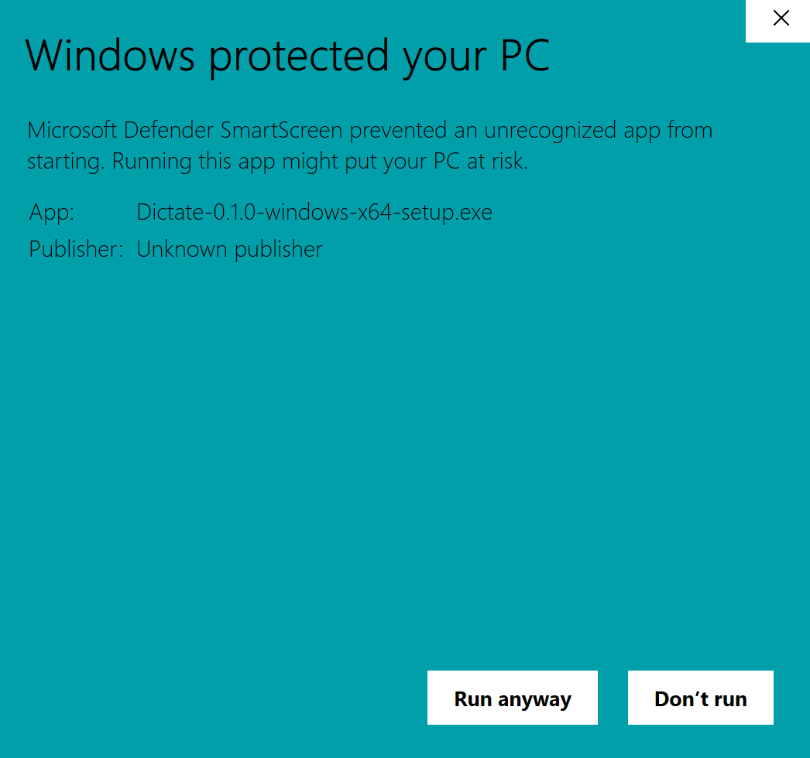
Each step on its own, as used small in the README's Quick start:
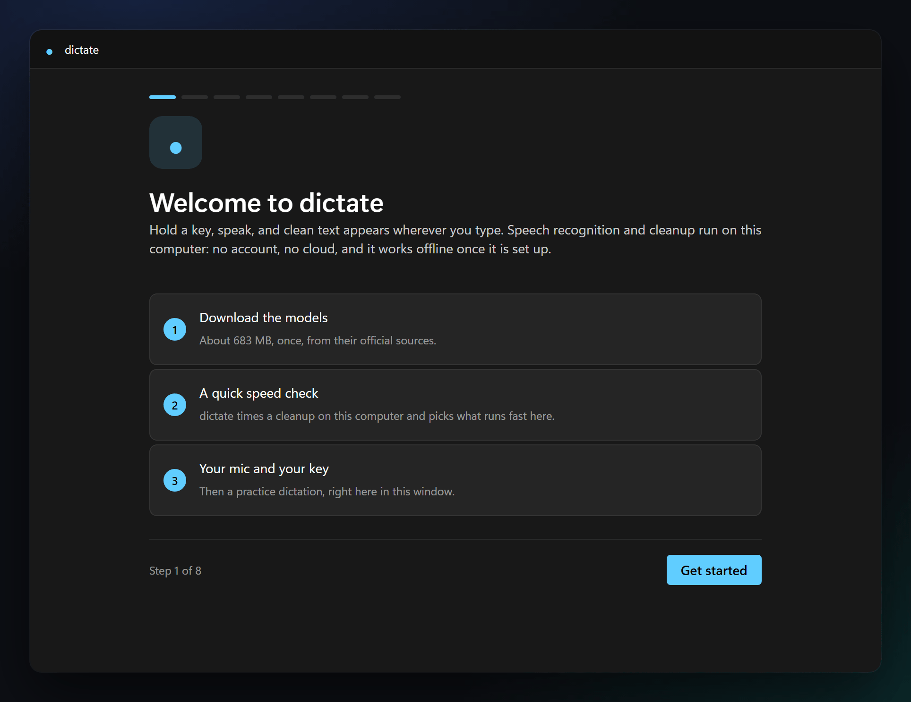
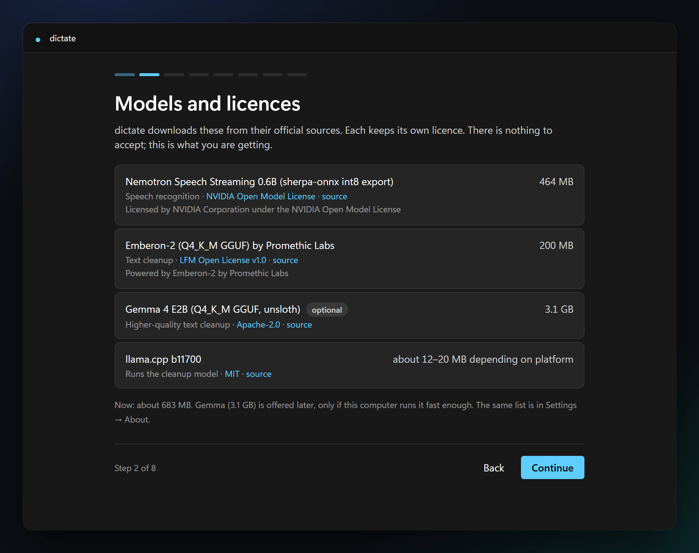
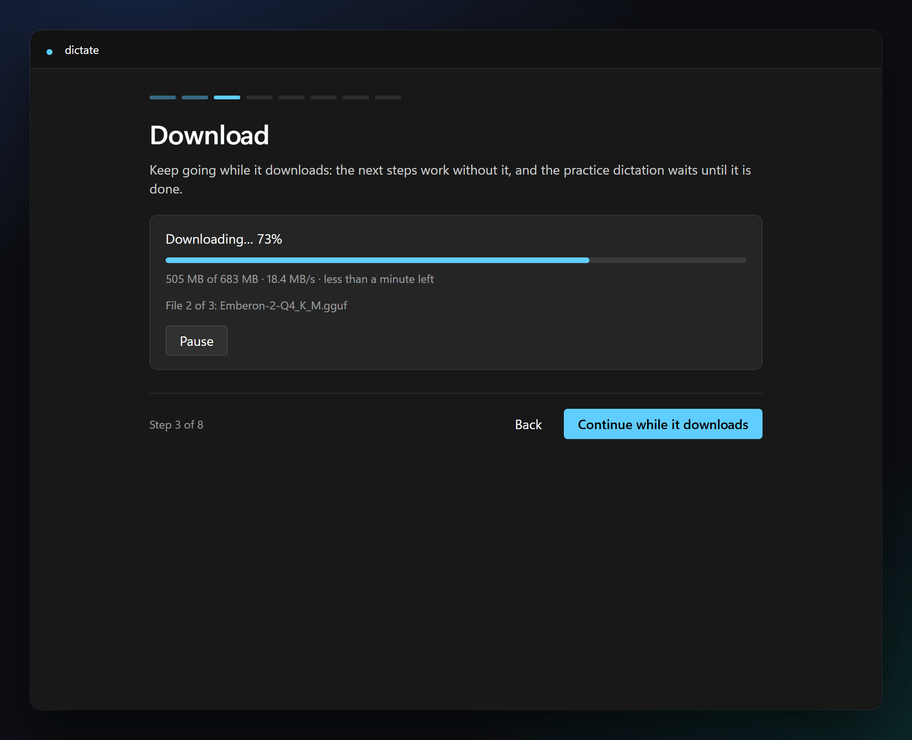
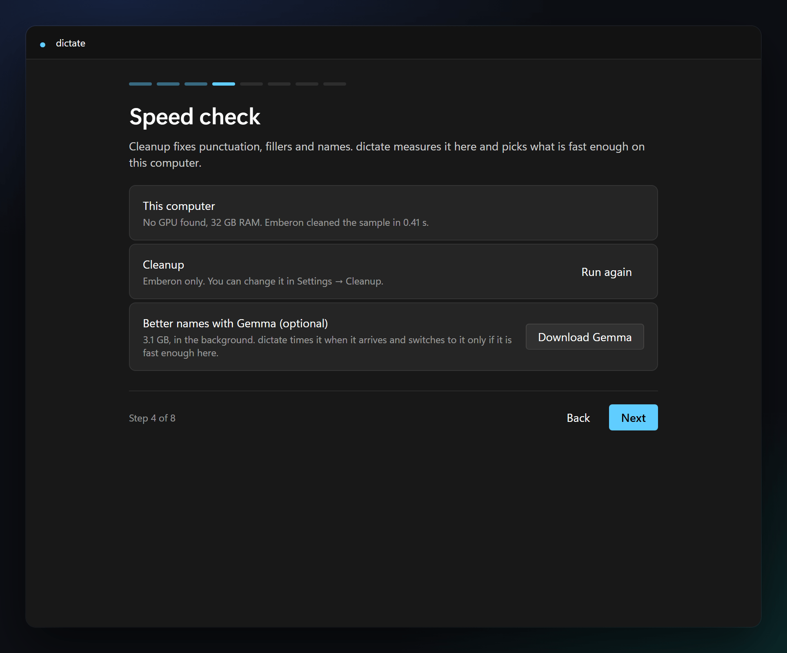
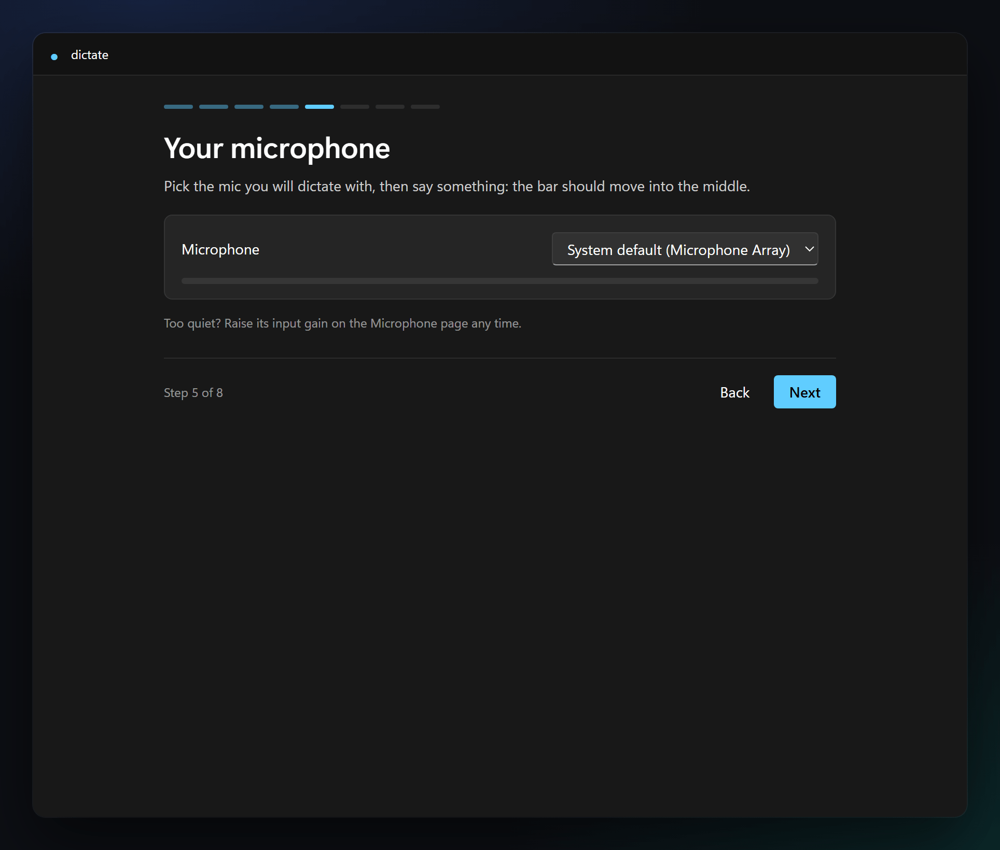
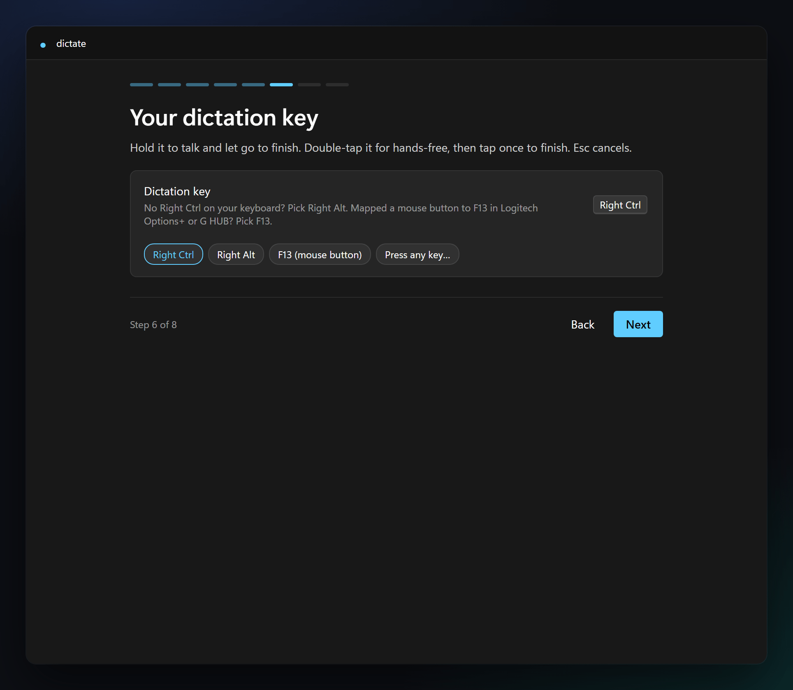
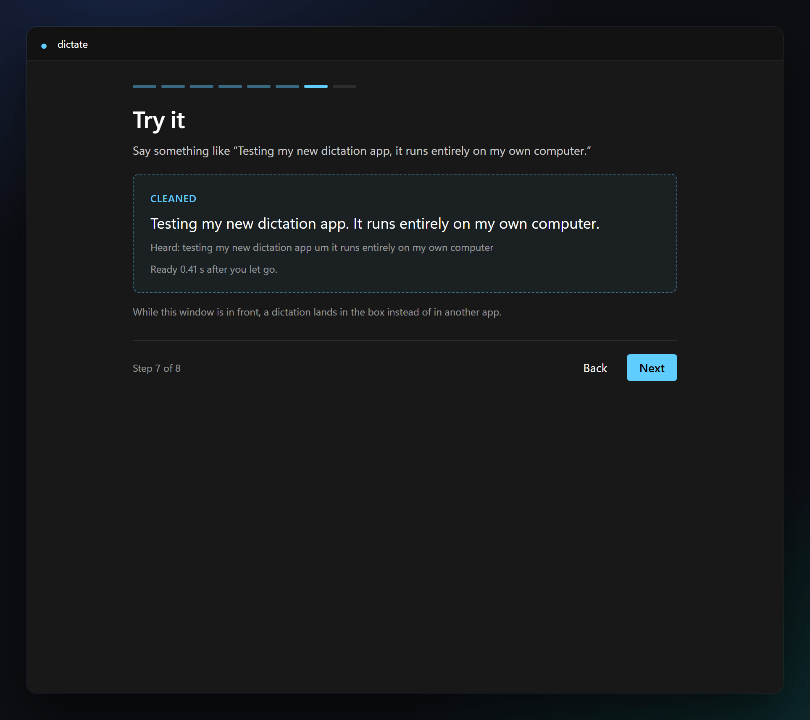
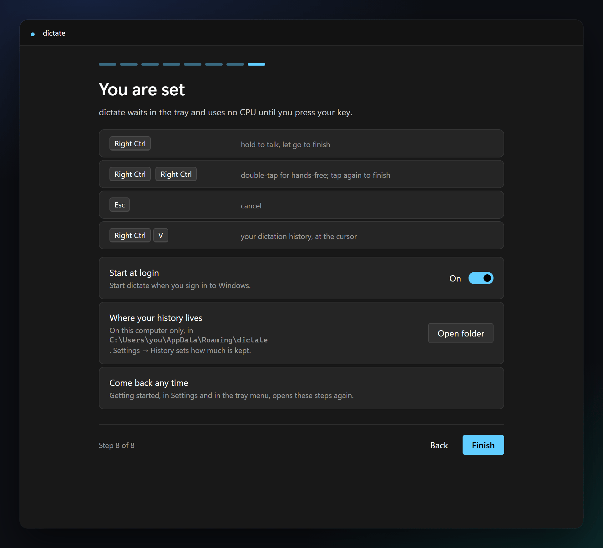
Settings
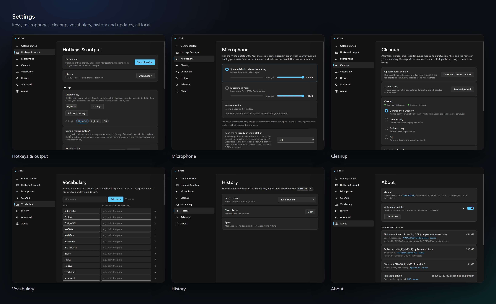